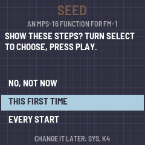
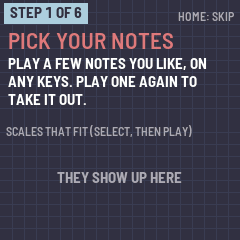
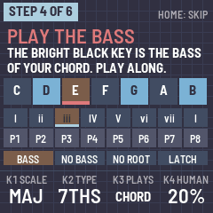

SEED is the chord builder of MPS-16, as firmware for the M-VAVE FM-1. Play a few notes you like, pick a scale that fits them, and the 16 white keys hold that key's chords and progressions. The black keys play the notes of the key and light up the bass of every chord you play. It sends everything out over USB MIDI, so it can drive the synths you already have.
This is an early test build by BeatSmith.
Contents
Install The first start: COACH The keys: A, B and C pads Home PICK NOTES LIB FX and SYS All the controls 1 InstallFrom Chrome or Edge on a computer, with the FM-1 connected by USB: open the installer and follow it. The installer can put M-VAVE's own firmware back. You can also try SEED in the browser first: it runs the same code, with sound.
2 The first start: COACH
COACH asks first The first time SEED starts, it asks whether to show its steps. Turn SELECT to choose NO, NOT NOW , THIS FIRST TIME or EVERY START , then press PLAY . You can change it later on the SYS page (K4).

Step 1: pick your notes COACH is six short steps. Each one says what to do, and the keys and buttons it means light up or blink. When you do the step, it moves on by itself:
PICK YOUR NOTES : play a few notes you like, on any keys.PICK A SCALE : turn SELECT to a scale that fits, press PLAY.PLAY THE PADS : the white keys blink. Play a few.PLAY THE BASS : the bright black key is the bass of the chord you just played.SHAPE IT : turn K2 for 7ths and 9ths, K3 for how the pads play.BASS OR NOT : try one of the last four black keys.HOME skips the steps. Hold SYS to start them again any time.

Step 4: the B pads show the chord 3 The keys: A, B and C padsThe B pads' lights show the chord you played last, so you always know what to play along:
Light Means Bright the bass of the chord Blinking the bass, taken out by NO BASS or NO ROOT: still the note to play under it Mid the rest of the chord Dim the rest of the key
The screen shows the same thing in the Earth Science colours, as MPS-16 ver WEB does: brown the bass, red the root, blue the chord, an outline for a note that was taken out.
BASS, NO BASS, NO ROOT : BASS plays the chords as they are, and the progressions with a bass line. NO BASS drops each chord's bottom note and the bass line. NO ROOT drops the root too, as long as two notes stay. The lit C pad is the one in use.
LATCH : with it on, a pad keeps playing after you let go. Tap a playing pad to stop it. Turn LATCH off and the pads it kept going stop.
4 HomeAt home the screen shows the key and tempo, the pad you played last, the B pads in colour, the 16 A pads, the C pads and the four knobs.
Control Does PRESET The key's root K1 The scale (major, minor and the modes) K2 TYPE: TRIADS, 7THS, 9THS, SUS2, SUS4, ADD9 K3 PLAYS: CHORD (held), STABS (on 1, the and of 2, and 4), ARP K4 HUMANIZE: a little timing and velocity, like a player SELECT BPM ALGORITHM The notes' length: left shorter, right longer, all the way right LEGATO OCT- / OCT+ The octave
A chord pad plays while you hold it. A progression plays once when you tap it, loops while you hold it past the end, and stops when you let go after it looped.
5 PICK NOTESPICK NOTES Press EDIT . Every key is now a note, like a normal keyboard. Play the notes you like: each one you play is added, and playing it again takes it out. The scales that hold all of them are listed below, best first (the first note you played as the root). Turn SELECT to choose one and press PLAY : the pads are rebuilt in that key. K1 clears your notes. EDIT again (or HOME) goes back without changing anything.
6 LIBPress SEL (or LFO). Turn SELECT through your key's chords and the progressions. PLAY lets you hear the one picked, and a white key puts it on that pad. A pad you put something on keeps it when you change the key (a small corner marks it).
7 FX and SYSFX : K1 STRUM (the chord's notes one after another), K2 HUMANIZE, K3 the ARP's speed.
SYS (tap): the MIDI page. K1 the A pads' channel, K2 the B pads' channel, K4 the steps (OFF, FIRST, ALWAYS). Hold SYS for the steps.
8 All the controlsControl Does A pads (white keys) Chords (1 to 8) and progressions (9 to 16). In LIB, take the pick B pads (black keys 1 to 7) The notes of the key, lit by the chord you played C pads (last 4 black keys) BASS, NO BASS, NO ROOT, LATCH HOME Home, from anywhere. In COACH: skip EDIT PICK NOTES SEL or LFO LIB FX FX SYS (GLO) Tap: MIDI page. Hold: COACH PLAY All notes off. In PICK NOTES: use the scale. In LIB: hear it. In COACH's question: choose SAVE Keep the key and the settings PRESET, K1 to K4, SELECT, ALGORITHM See Home OCT- / OCT+ The octave